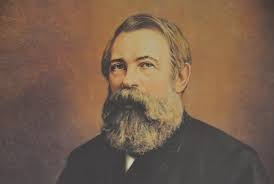
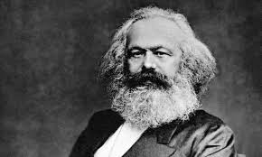

Марксизм — философское, экономическое и политическое учение, созданное в XIX веке Карлом Марксом (1818–1883) и Фридрихом Энгельсом (1820–1895). Оно рассматривает историю как процесс борьбы классов, где решающую роль играют материальные условия жизни, а конечной целью является ликвидация эксплуатации и построение бесклассового коммунистического общества.
Учение оформилось в работах «Манифест Коммунистической партии» (1848) и «Капитал» (1867–1894).
В конце XIX века марксизм стал идейной основой рабочего движения Европы. Владимир Ленин (1870–1924) развил марксизм, применив его к анализу эпохи империализма и практике революционной борьбы. В СССР марксизм стал официальной идеологией и основой государственной политики. В послевоенные годы советская философия продолжала развивать марксистскую теорию; среди заметных мыслителей были Эвальд Ильенков и Михаил Лифшиц. После 1970-х годов ортодоксальный марксизм утратил былое влияние, оставаясь в основном предметом академических исследований. В своём ортодоксальном виде марксизм представляет собой цельную научную систему, объединяющую философию, экономику и политику, и направленную на понимание и революционное преобразование общества.
Немецкая классическая философия